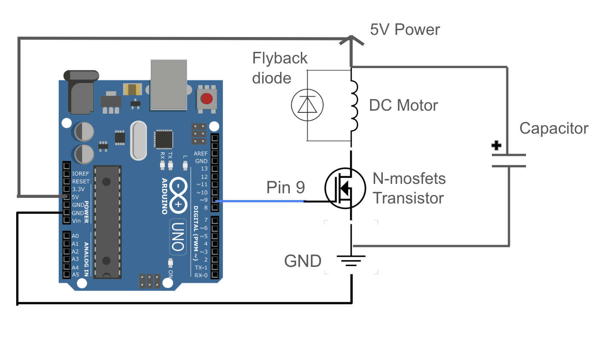

Circuit Gif

LED strip Voltage and Current
Transistor Max Current
The maximum drain current of a N-channel MOSFET is around 37A. My circuit is operating at a much smaller current to power the LED strip which makes this circuit more than safe to use.
pinMode() Initalizing
The digital pin my LEDs and transistor are connected to is initalized as an output and can control 0-5V. Because pin 9 can be used for PWM, I'm able to use analogWrite to control the brightness of the LEDs. When I write analogWrite(9, 50), the MOSFET is partially turned ON for a small portion of the PWM cycle, modulating the current through the LED strip and making them appear dimmer. The transistor is essenitally as a switch controlled by PWM and a gate voltage that determines if the LEDs receive power and at what intensity.
Circuit Image
Continued image to show high load power adaptor connected to an outlet in my circuit.
Schematic
Arduino Code
IR Remote code set-up was derived from https://github.com/Arduino-IRremote/Arduino-IRremote#examples-for-this-library
#include <IRremote.hpp> // Imports IR remote library
int light = 9; // Initializes light/transistor to pin 9
#define IR_RECEIVE_PIN 11 // Initializes IR reciever as pin 11, syntax found on github IR Remote library
bool lightState = false; // LED light strip is initally off
int lightBrightness = 50; // Default brightness level is 50 (out of 0-255) (I purposefully didn't want my LED to be too bright)
void setup() {
Serial.begin(9600); // // Initialize serial communication
pinMode(light, OUTPUT); // Initialize light/transistor to be an output
IrReceiver.begin(IR_RECEIVE_PIN, ENABLE_LED_FEEDBACK); // Start the receiver
}
void loop() {
if (IrReceiver.decode()) {
// This code was derived directly from https://github.com/Arduino-IRremote/Arduino-IRremote#examples-for-this-library, it is using the serial monitor to decode the buttons on my IR remote
Serial.println(IrReceiver.decodedIRData.decodedRawData, HEX); // Print "old" raw data
IrReceiver.printIRResultShort(&Serial); // Print complete received data in one line
IrReceiver.printIRSendUsage(&Serial); // Print the statement required to send this data
// This code turns on and off the LED strip using the red power button in the IR Remote
if (IrReceiver.decodedIRData.command == 0x45) { // if the power button is pressed
lightState = !lightState; // set lightState from false(off) to true(on) and vise-verse each time the power button is pressed
if(lightState) {
analogWrite(light, lightBrightness); // if light state is on make LED lights turn on
}
else{
analogWrite(light, 0); // turn led lights off
}
}
IrReceiver.resume(); // Enable receiving of the next IR remote value
}
}
Additional Questions
Question 1
The absolute maximum amount of continous drain current between pins 2 and 3 is 37.2A of a n-mosfet transistor, as found on the datasheet.
Question 2
n-mosfet transistor: https://www.diodes.com/assets/Datasheets/DMT6009LCT.pdf
DC Motor: https://cdn.sparkfun.com/datasheets/Robotics/RP6%20motor%20TFK280SC-21138-45.pdf
flyback diode: https://www.ti.com/lit/ds/symlink/lm5180-q1.pdf?ts=1739844289471&ref_url=https%253A%252F%252Fwww.google.com%252F
capacitor: https://www.mouser.com/c/ds/passive-components/capacitors/?srsltid=AfmBOoqyMgYE2I7XZe_TnHOgK03kRWShnSXSEnYHCWAApxK_4NEAuaZ8
Question 3
Pseudo code to move both motors forwards, backwards, one motor forward and one backward, then switch directions one motor backward, one forward.
In setup:
Use pinMode to set pins 1(EN), 2(EN), 5(2A), 6(1A), 10(3A), 11(4A) as OUTPUTs
Define and enable motors by using digitalWrite setting motor 1 as (pin 1) and motor 2 (pin 2) to HIGH
In the loop:
// To move both motors forward
Use digitalWrite to control motor 1, set pin 5 to high and 6 to low
Use digitalWrite to control motor 2, set pin 11 to high and 10 to low
wait 2 seconds
// To move both motors backward
Use digitalWrite to control motor 1, set pin 5 to low and 6 to high
Use digitalWrite to control motor 2, set pin 11 to low and 10 to high
wait 2 seconds
// Move motor 1 motor forward, motor 2 backward
Use digitalWrite to control motor 1, set pin 5 to high and 6 to low
Use digitalWrite to control motor 2, set pin 11 to low and 10 to high
wait 2 seconds
// Switch directions, move motor 1 motor backwards, motor 2 forwards
Use digitalWrite to control motor 1, set pin 5 to low and 6 to high
Use digitalWrite to control motor 2, set pin 11 to high and 10 to low
wait 2 seconds
// Stop motors before restarting loop
By using digitalWrite set motor 1 as (pin 1) and motor 2 (pin 2) to LOW
wait 1 second